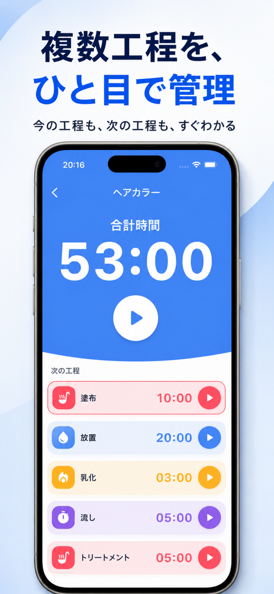
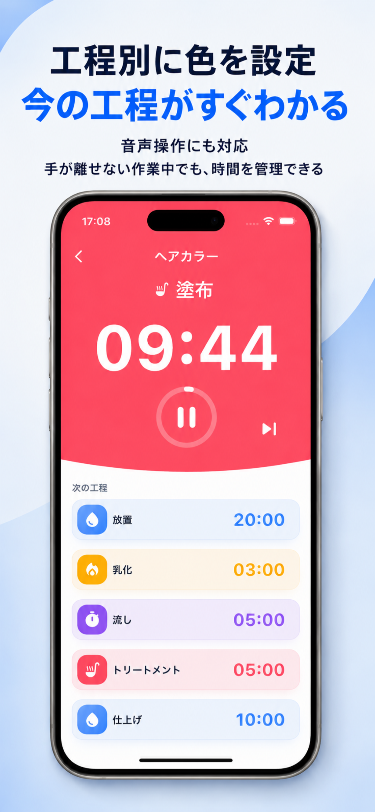
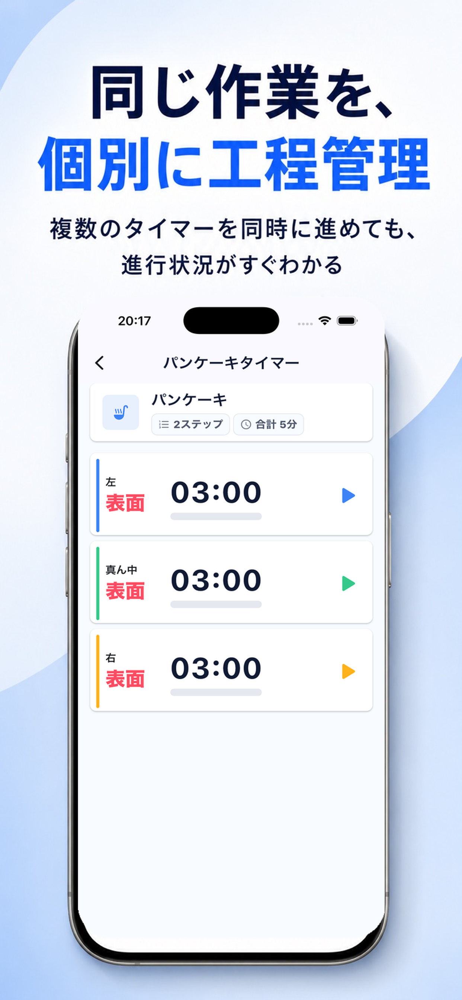
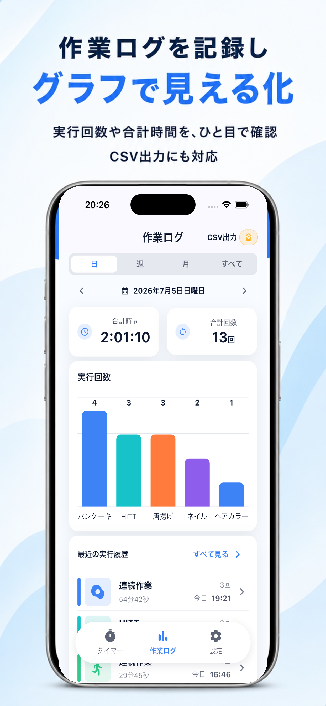
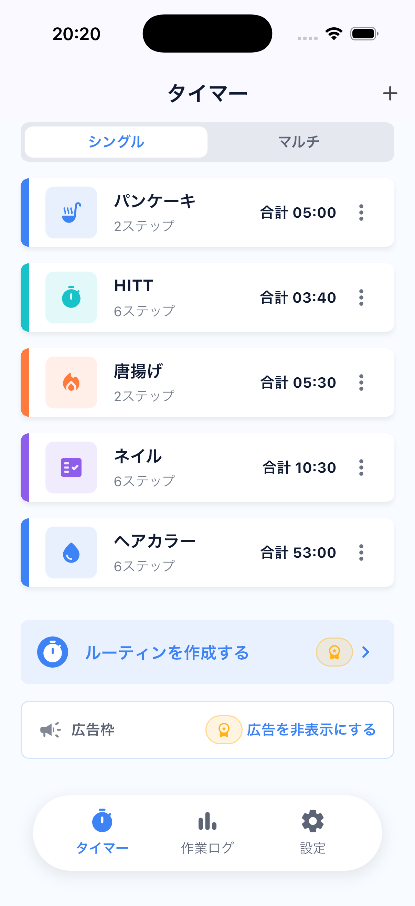
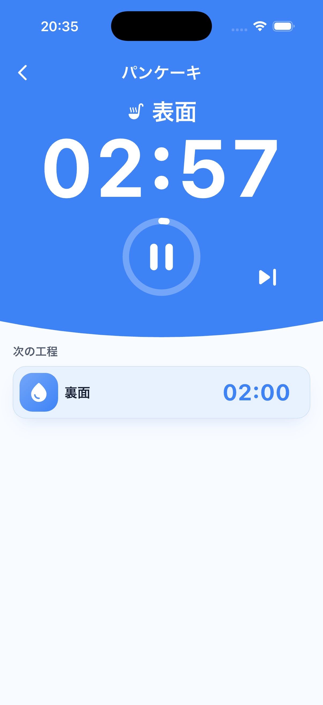
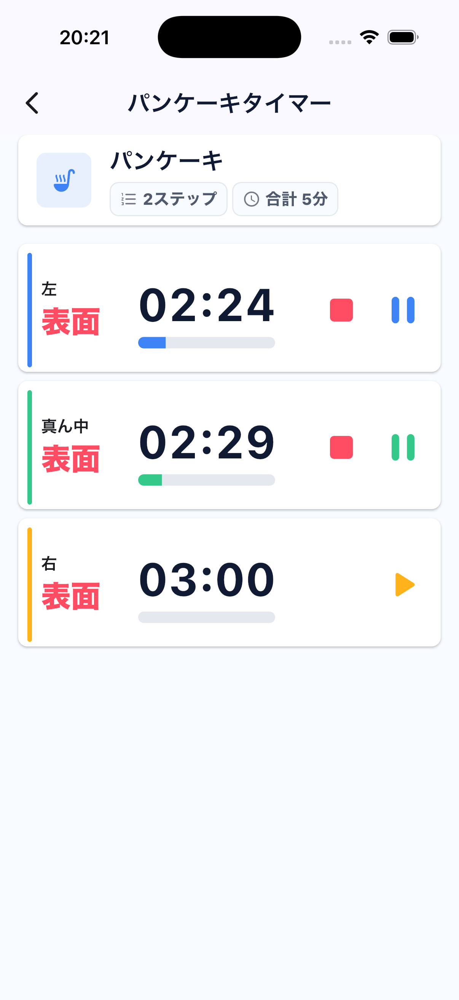
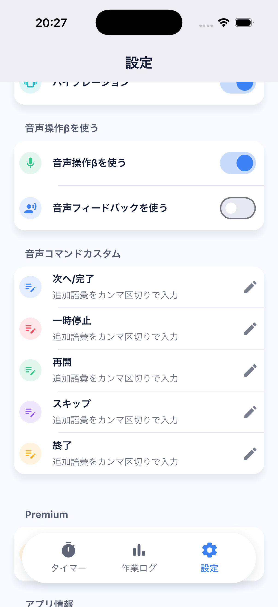

工程タイマー
複数工程を、
ひと目で管理。
工程ごとに色をつけて、今やることも次にやることもすぐ確認。料理、トレーニング、仕込み、清掃、検品など、くり返す作業をテンポよく進められます。
- 工程別カラー
- 音声操作
- マルチタイマー
- 作業ログ
- CSV出力

01
工程別に色を設定。今の工程がすぐわかる。
工程ごとに色とアイコンを分けられるので、作業中でも現在位置が一目でわかります。手が離せない場面では音声操作も活用できます。
- 現在工程を大きなタイマーで表示
- 次の工程まで同じ画面で確認
- 終了音、バイブレーションにも対応


02
同じ作業を、個別に工程管理。
複数の対象を少しずつずらして進める作業も、1画面で見やすく管理できます。各セッションの進行状況を並べて確認できます。
- 複数タイマーを同時に実行
- セッションごとに状態を固定表示
- 作業中の停止や一時停止も個別操作
03
作業ログを記録し、グラフで見える化。
実行回数や合計時間を確認して、日々の作業を振り返れます。PremiumではCSV出力も使えるので、共有や記録にもつなげやすくなります。
- 日、週、月、すべてで集計
- 作業ごとの実行回数をグラフ表示
- CSV出力で外部管理にも対応

実際の画面で、作業の流れを確認。
保存した工程セット、シングル実行、マルチタイマー、設定画面まで、作業中に迷わない見た目に整えています。




くり返す作業を、もっとスムーズに。
工程タイマーで、今日の作業を止めずに進める。